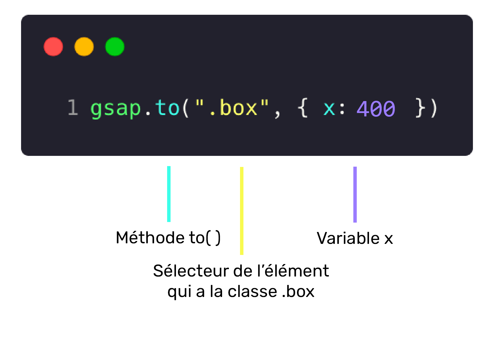

L'objet JavaScript GSAP est le point de départ de toutes les fonctionnalités associées à GSAP.
- Création d'animations
- Configuration de paramètres
- Ajout de plugiciels (plugins), d'interpolations (eases) ou d'effets
- Contrôle des animations
Les interpolations, ou en anglais: tweenings, permettent de créer des animations similaires à celles réalisées en CSS.
Pour ce faire, il suffit de spécifier:
- Le ou les éléments à animer avec un sélecteur, ex: .element
- Un objet indiquant la ou les propriétés à animer et les valeurs souhaitées,
ex: { opacity: 0.5 }
Voir la liste des propriétés animables sur le site de GSAP.
Il est possible d'animer la majorité des propriétés CSS. Cependant, il est nécessaire de remplacer les traits d’union "-" par une nomenclature camelCase 🐫. Par exemple, font-size deviendrait fontSize.
Bien qu’il soit possible d’animer presque toutes les propriétés CSS, il est préférable de se concentrer sur transform et opacity lorsque possible, puisque ces propriétés bénéficies d’une accélération matérielle.
- opacity
- x et y
- rotation, rotationX ou rotationY
- scale, scaleX ou scaleY
- skewX et skewY
Dans l'exemple ci-dessous, un carré est positionné en haut à gauche de son parent. En cliquant sur le bouton ▶️, une animation GSAP le déplace vers la droite.
See the Pen GSAP - to() by TIM Montmorency (@tim-momo) on CodePen.
Décortiquons l'animation:
- gsap indique que nous désirons utiliser une méthode appartenant à la librairie GSAP.
- to() correspond à la méthode utilisée. Traduisible par "vers", cette méthode indique qu'un état de fin sera passé et que l'élément doit faire une interpolation vers celui-ci.
- '.element' le sélecteur correspondant à l'élément devant être animé.
- { x: '400%' } un état de fin sous forme d'objet contenant une propriété (x) et une valeur ('400%').
L'élément se déplace donc vers la droite ➡️ de 4x sa largeur (400%) en l'espace d'une seconde.

See the Pen GSAP - to() by TIM Montmorency (@tim-momo) on CodePen.
Décortiquons une animation avec plus d'une propriété:
- from() correspond à la méthode utilisée. Traduisible par "à partir de", cette méthode indique qu'un état de départ sera passé et que l'élément doit partir de celui-ci pour faire une interpolation vers ses valeurs initiales.
- { x: '400%', opacity: 0 } un état de départ sous forme d'objet contenant les propriétés x & opacity et les valeurs 400% & 0 (transparent au début de l'animation).
Permets de spécifier un état de départ et de fin d'une animation, contrairement à from() et to() qui utilisent l'état actuel comme point de départ ou fin. Cette interpolation permet d'avoir un contrôle total sur une animation, en particulier lorsqu'elle est enchaînée avec d'autres animations.
See the Pen GSAP - from() by TIM Montmorency (@tim-momo) on CodePen.
Dans cet exemple, il est important de remarquer la présence de deux objets de propriétés { x: '0%' } et { x: '400%' } plutôt qu'un seul. Le premier spécifie l'état de départ et le deuxième l'état de fin de l'animation.
Il est possible d'omettre une propriété CSS dans l'état de départ et de la spécifier uniquement dans l'état de fin.
Par exemple: { x: '0%' }, { x: '400%', scale: 2 } fonctionnerait, puisque GSAP assumerait que le scale de départ correspond au scale naturel de l'élément (1) et donc l'animerait jusqu'à 2.
Cependant, spécifier uniquement une propriété dans l'état de départ ne génèrera pas d'animation sur cette dite propriété.
Par exemple { x: '0%', scale: 2 }, { x: '400%' } scale donnerait un scale initial de 2 et puisqu'aucun scale de fin n'est spécifié, GSAP assumera que le scale de fin doit correspondre au scale de départ.
set() initialise immédiatement les propriétés des éléments HTML ciblés. Il s'agit essentiellement d'une animation de type to() qui dure zéro seconde. C'est la même chose mais avec un nom plus un peu plus intuitif : "set" que l'ont peut traduire par "définit immédiatement tel paramètre". Les lignes suivantes produisent donc des résultats identiques :
À titre de rappel, une sélecteur définit un ou des éléments HTML sur le(s)quel(s) s'applique un ensemble de règles. Dans ce cas ci, on leur applique une animation.
Avec GSAP, la "magie" c'est qu'on n'a pas besoin de faire un querySelector ou un getDocumentById ou autre. Simplement, ajouter en premier paramètre de gsap() le nom de la classe de l'élément ou le nom de l'id, ou encore le nom de la balise.
À la place du sélecteur ".class", vous pouvez aussi utiliser un tableau (array) ["abc,"def"] contenant plusieurs sélecteurs afin de définir les propriétés de plusieurs éléments HTML en même temps. Voici un exemple :